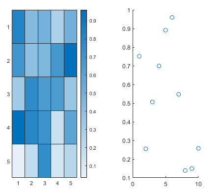

rendererinfo
Graphics renderer information
Description
info = rendererinfo
info = rendererinfo(target)target as any type of axes or a standalone visualization. You
can also specify an array of n axes or standalone visualizations, in
which case info is returned as a 1-by-n structure array.
Examples
Get the default renderer information for the current session.
info = rendererinfo
info = struct with fields:
GraphicsRenderer: 'WebGL'
Vendor: 'Google Inc. (Google)'
Version: 'WebGL 2.0 (OpenGL ES 3.0 Chromium)'
RendererDevice: 'ANGLE (Google, Vulkan 1.3.0 (SwiftShader Device (Subzero) (0x0000C0DE)), SwiftShader driver)'
Details: [1×1 struct]
Create a surface plot of the peaks function.
surf(peaks)

Get the current axes, and then get renderer information for the axes. Your system might return different information.
ax = gca; info = rendererinfo(ax)
info =
struct with fields:
GraphicsRenderer: 'WebGL'
Vendor: 'Google Inc. (NVIDIA)'
Version: 'WebGL 2.0 (OpenGL ES 3.0 Chromium)'
RendererDevice: 'ANGLE (NVIDIA, NVIDIA Quadro P600 (0x00001CB2) Direct3D11 vs_5_0 ps_5_0, D3D11)'
Details: [1×1 struct]
Get the driver details.
info.Details
ans =
struct with fields:
HardwareSupportLevel: 'Full'
SupportsDepthPeelTransparency: 1
SupportsAlignVertexCenters: 1
SupportsGraphicsSmoothing: 1
MaxTextureSize: 16384
MaxFrameBufferSize: 16384Create a heatmap chart and a scatter plot in a figure.
tiledlayout(1,2) nexttile h = heatmap(rand(5)); ax1 = nexttile; scatter(ax1,1:10,rand(1,10))

Get the renderer information for the heatmap chart and the parent axes of the
scatter plot. In this case, info is an array that contains two
structures.
info = rendererinfo([h ax1])
info =
1×2 struct array with fields:
GraphicsRenderer
Vendor
Version
RendererDevice
DetailsIndex into the array to get the renderer version for the heatmap chart. Your system might return different version information.
info(1).Version
ans =
'WebGL 2.0 (OpenGL ES 3.0 Chromium)'